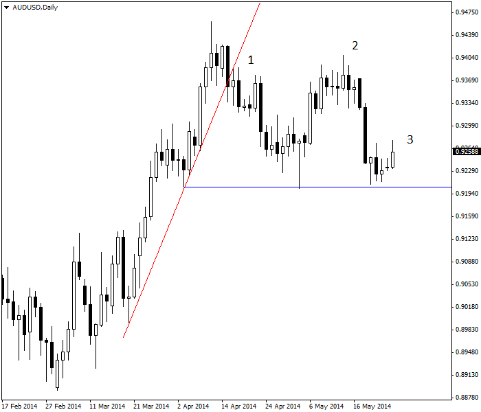
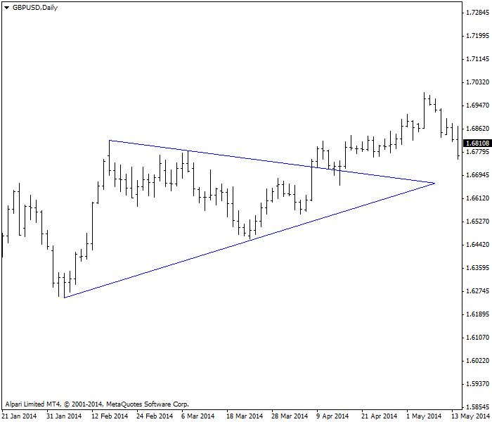
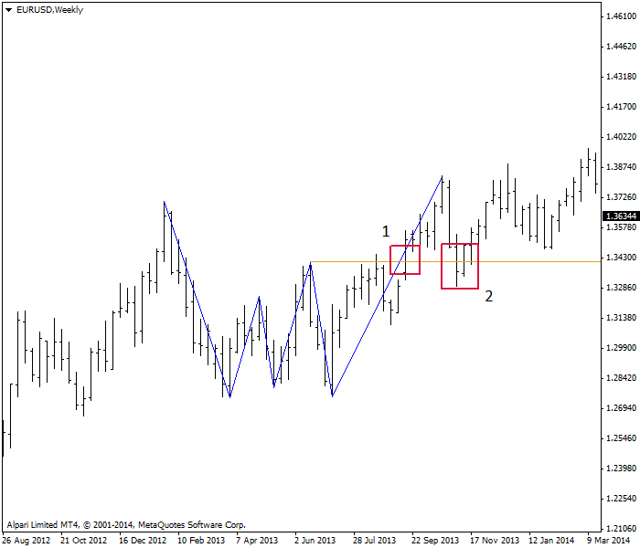
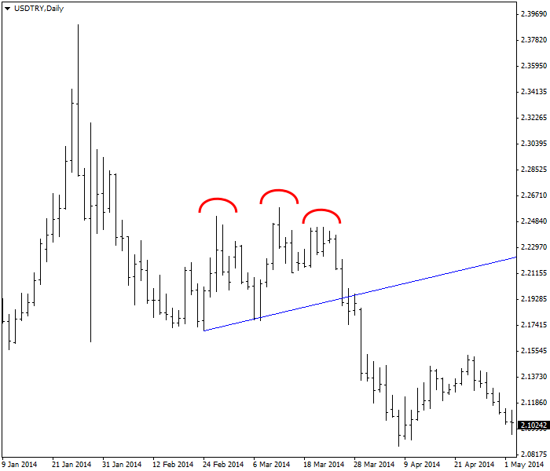

<!DOCTYPE html>
<html>
</html>
<head>
  <meta charset="utf-8">
  <meta http-equiv="X-UA-Compatible" content="IE=edge">
  <title>外汇站（fx-z.com） - 图表形态</title>
  <meta name="description" content="">
  <meta name="viewport" content="width=device-width, initial-scale=1">
  <meta name="robots" content="all,follow">
  <!-- Bootstrap CSS-->
  <link rel="stylesheet" href="vendor/bootstrap/css/bootstrap.min.css">
  <!-- Font Awesome CSS-->
  <link rel="stylesheet" href="vendor/font-awesome/css/font-awesome.min.css">
  <!-- Google fonts - Roboto-->
  <link rel="stylesheet" href="https://fonts.googleapis.com/css?family=Roboto:400,300,700,400italic">
  <!-- owl carousel-->
  <link rel="stylesheet" href="vendor/owl.carousel/assets/owl.carousel.css">
  <link rel="stylesheet" href="vendor/owl.carousel/assets/owl.theme.default.css">
  <!-- theme stylesheet-->
  <link rel="stylesheet" href="css/style.default.css" id="theme-stylesheet">
  <!-- Custom stylesheet - for your changes-->
  <link rel="stylesheet" href="css/custom.css">
  <!-- Favicon-->
  <link rel="shortcut icon" href="img/favicon.png">
  <!-- Tweaks for older IEs--><!--[if lt IE 9]>
    <script src="https://oss.maxcdn.com/html5shiv/3.7.3/html5shiv.min.js"></script>
    <script src="https://oss.maxcdn.com/respond/1.4.2/respond.min.js"></script><![endif]-->
</head>
<body>
  <div id="all">
    <div class="container-fluid">
      <div class="row row-offcanvas row-offcanvas-left"> 
        <!--   *** SIDEBAR ***-->
        <div id="sidebar" class="col-md-4 col-lg-3 sidebar-offcanvas">
          <div class="sidebar-content">
            <h1 class="sidebar-heading"> <a href="https://fx-z.com">fx-z.com</a></h1>
            <p class="sidebar-p">介绍外汇相关的基本知识，告诉您如何进行自己的技术面和基本面分析，讲解先进的交易理念，并且为您阐述失败交易者与专业交易者之间的真正区别。 </p>
            <p class="sidebar-p">通过这些课程的学习，您将学会如何根据自己的优势来应用情绪分析，还将了解真实世界的事件会对货币汇率产生什么影响，央行在外汇市场中所发挥的作用，以及交易者在颇受欢迎的即期外汇交易中有哪些选择方案。 </p>
            <ul class="sidebar-menu">
                <!-- Link-->
                <li class="sidebar-item"><a href="https://fx-z.com" class="sidebar-link">首页</a></li>
                <!-- Link-->
                <li class="sidebar-item"><a href="cihui.html" class="sidebar-link">外汇词汇</a></li>
                <!-- Link-->
                <li class="sidebar-item"><a href="ebook.html" class="sidebar-link">获取外汇电子书</a></li>
            </ul>
            <p class="social"><a href="https://www.forextimechina.com.cn/zh?form=IZIN" target="_blank"data-animate-hover="pulse" class="external facebook"><i class="fa fa-eur"></i></a><a href="https://www.forextimechina.com.cn/zh?form=IZIN" target="_blank" data-animate-hover="pulse" class="external gplus"><i class="fa fa-gbp"></i></a><a href="https://www.forextimechina.com.cn/zh?form=IZIN" target="_blank" data-animate-hover="pulse" class="external twitter"><i class="fa fa-rmb"></i></a><a href="https://www.forextimechina.com.cn/zh?form=IZIN" target="_blank" title="" class="external instagram"><i class="fa fa-dollar"></i></a><a href="https://www.forextimechina.com.cn/zh?form=IZIN" target="_blank" data-animate-hover="pulse" class="email"><i class="fa fa-money"></i></a></p>
            <div class="copyright text-center text-md-left">
             
              
            </div>
          </div>
        </div>
        <!--   *** SIDEBAR END ***  -->
        <!--   *** DETAIL ***-->
        <div class="col-md-8 col-lg-9 content-column white-background">
          <div class="small-navbar d-flex d-md-none">
            <button type="button" data-toggle="offcanvas" class="btn btn-outline-primary"> <i class="fa fa-align-left mr-2"></i>菜单</button>
            <h1 class="small-navbar-heading"> <a href="https://fx-z.com/9-2.html">下一篇 </a></h1>
          </div>
          <div class="row">
            <div class="col-xl-10">
              <div class="content-column-content">
                <h1>图表形态</h1>
     <p>
    当您听到“形态”这个词，您可能立即得出结论：这是一种旧式、主观的“图表阅读”，比不上软件程序在几秒钟内生成的数学指标。
</p>
<p>
    这是一种错误的观点。虽然学习图表形态确实要花费一些时间，但如今，形态仍然有其相关性和用途，与它们在 20 世纪历程中被发明时一样 （而且，由 Edwards 和 Magee 在《技术分析与股票趋势》一书中首次明确提出，该书出版于 1948 年，且目前仍然在版）。这是因为，形态反映了价格变动之下潜在的市场心理，而且几十年以来，人们不大改变其群体心理，如果曾经改变过的话。因此，由于同样的原因，形态随着时间的推移而重复。有趣的是，有些人支持蜡烛图和蜡烛图组合，认为它们很有意义，但却转身拒绝经典形态，认为它们已经过时。
</p>
<p>
    拒绝这些形态的真正原因在于，形态的种类太多，以致于他们很难分辨形态，有时会像所有指标一样出错。似乎付出了大量精力却只收到很少的回报。另一个原因在于，蜡烛图体现了近期信息，例如一或两个时段，而形态在可辨识之前往往包含许多图形。不过，您至少应该学习几个形态，因为它们有助于您判别即将出现的逆转走势。待反转指标的主要用途是设置目标获利位。这是您的钱——您应该关心最大收益。
</p>
<p>
    真实“秘密”形态
</p>
<p>
    突破支撑位或阻力位后，您首先需要的形态是 Vic Sperandeo 的“1-2-3”形态，该形态出自《Trader Vic：Methods of a Wall Street Master》一书。自 Sperandeo 于 1993 年出版此书后，这种形态显然不再是秘密，但交易者往往会忘记这一点。
</p>
<p>
    按照传统方法，支撑位被突破时用倒 V 表示，阻力位被突破用 V 表示。不过，这只适用于教科书。在真实交易中，价格往往在突破之后摇摆不定，出现不确定性。有时，价格并非真正突破支撑位或阻力位，之后又恢复现有趋势方向。您怎样知道何时是真正的支撑突破或阻力突破，以及何时应该交易？
</p>
<p>
    下图显示与领先和滞后指标课程图表相同的货币对和时间周期（AUD/USD，每日图）。第 1 步是突破支撑线。第 2 步是试探前一个最高价——这一中间变动引起大量我们经常在外汇行情中看到的焦虑和困惑情绪。不过，若无法匹配和超越前一个最高价，则仍然停留在第 2 步。现在，我们看到价格突破前一个上涨趋势中间低点之下的水平线。这是第 3 步。只有突破这条线时，我们才能确信逆转到空头头寸是正确的操作。
</p>
<p>
     Vic Sperandeo 1-2-3 形态的三个步骤
</p>
<p>
    &nbsp;
</p>
<p>
    &nbsp; 红线 前一个支撑位&nbsp; &nbsp;蓝线 前一个显著低点
</p>
<p>
    回顾领先和滞后指标课程，我们已经有一个来自滞后移动平均线交叉点和动量的卖出信号，而且该信号由动量确认。但是，如果您非常厌恶风险，您会总想查看 Sperandeo 的 1-2-3 形态。或者，若您较早根据另一个指标卖空，您可以将目标位刚好设在 1-2-3 线的上方，以作为安全侧，而且一旦 1-2-3 线被越过，您可以加仓（缩放）。
</p>
<p>
    更传统的经典形态数量超过一百种。
</p>
<p>
    <strong>三角形</strong>
</p>
<p>
    您经常会见到外汇评论参考楔形、三角旗和所有形式的三角形。三角形形成于您能够轻松画出支撑线和阻力线时，而且这两条线可延伸、汇聚至同一个顶点。显然，在达到这一点之前，价格应该突破另一条线。你可以在下图中看到 GBP/USD 上升三角形。我们在此处获得一个向上突破——与预期一致。通常，上升三角形的顶部阻力线为水平线。而下降三角形呈现它的镜像形状。
</p>
<p>
     GBP/USD 每日图表上升三角形形态示例
</p>
<p>
    <strong>双重顶和双重底，三重顶和三重底</strong>
</p>
<p>
    与其它证券相比，交易者明显更习惯于在外汇交易中试探和重新试探前面的高点和低点。这导致了双重顶和双重底以及三重顶和三重底的形成。双重底呈“W”形，而三重底呈现多一条腿的快速“W”形。
</p>
<p>
    请参见下图。这是一张 EUR/USD 每周图表，在 2013 年 3 月至 7 月形成了三重底。一些分析师当时就此评论，只有两个 W 形的最高价被超越时，我们才可以预期上行突破。注意，突破（1）之后，价格被回拉至确认线（2）的下方。此处出现回调很常见。您必须勇敢地静观其变。人们根据每周图表交易的机会非常小，但如果能在确定三重底后知道乘离率形成上行突破，那么这一信息始终很有用处。
</p>
<p>
     EUR/USD 每周图表形成三重底，突破之后出现回调
</p>
<p>
    <strong>头肩</strong>
</p>
<p>
    上述图表与倒置头肩形态不同，因为在真正的倒置头肩形态中，其中间凸起低于两侧凸起，而在常规头肩形态中，其中间凸起高于两侧凸起。参见下图（土耳其里拉）头部总是高于第一个肩部，且肩部作为试探位已成功超过前一个最高点。但是，第二个肩部未能超过中间的最高点，同时也未能超过第一个肩部。连接两个中间低点的蓝色颈线被向下击破之前，这还不能构成确认卖出信号。
</p>
<p>
     USD/TRY 每日图表头肩形态，附有倾斜的颈线
</p>
<p>
    <br/>
</p>
<p>
    <br/>
</p>
              </div>
            </div>
          </div>
        </div>
      </div>
    </div>
  </div>
  <!-- JavaScript files-->
  <script src="vendor/jquery/jquery.min.js"></script>
  <script src="vendor/popper.js/umd/popper.min.js"> </script>
  <script src="vendor/bootstrap/js/bootstrap.min.js"></script>
  <script src="vendor/jquery.cookie/jquery.cookie.js"> </script>
  <script src="vendor/owl.carousel/owl.carousel.min.js"></script>
  <script src="vendor/masonry-layout/masonry.pkgd.min.js"></script>
  <script src="js/front.js"></script>
</body>